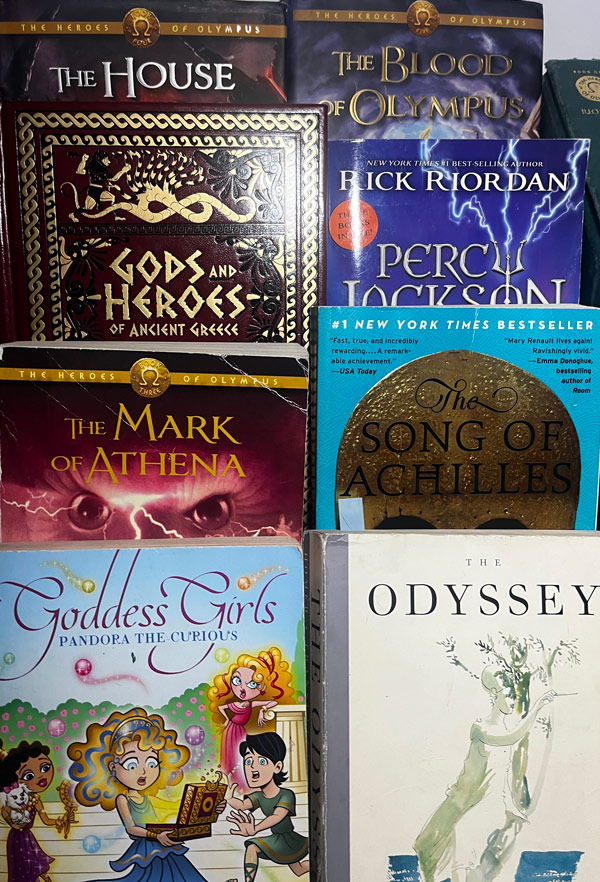
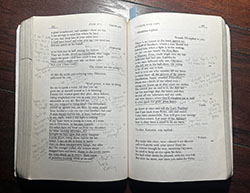

Stage I
The Beginning
Where it all began - colorful retellings of ancient myths!

This series was my first introduction to Athena!
Hover over areas of the images to explore the books inspire me.
Where it all began - colorful retellings of ancient myths!
Rick Riordan's modern heroes — mythology retold in modenrn times

Building a collection where each book has a new perspective on ancient tales

Going from retellings to the source material
